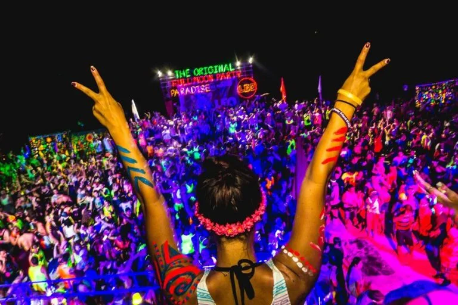
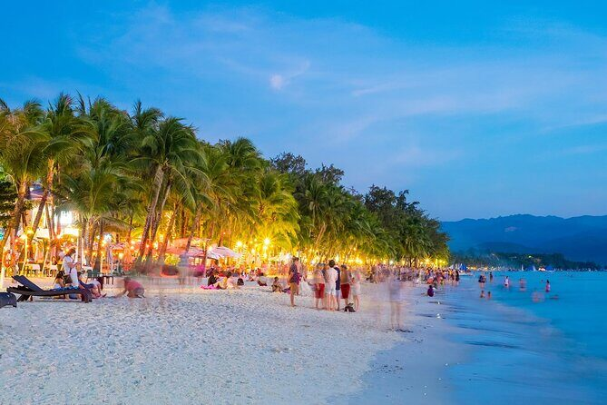
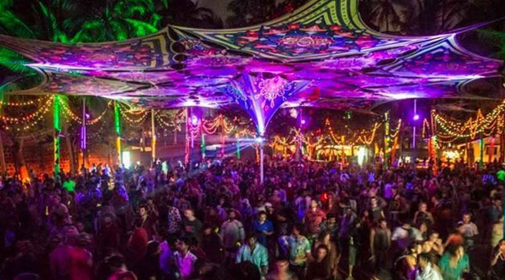
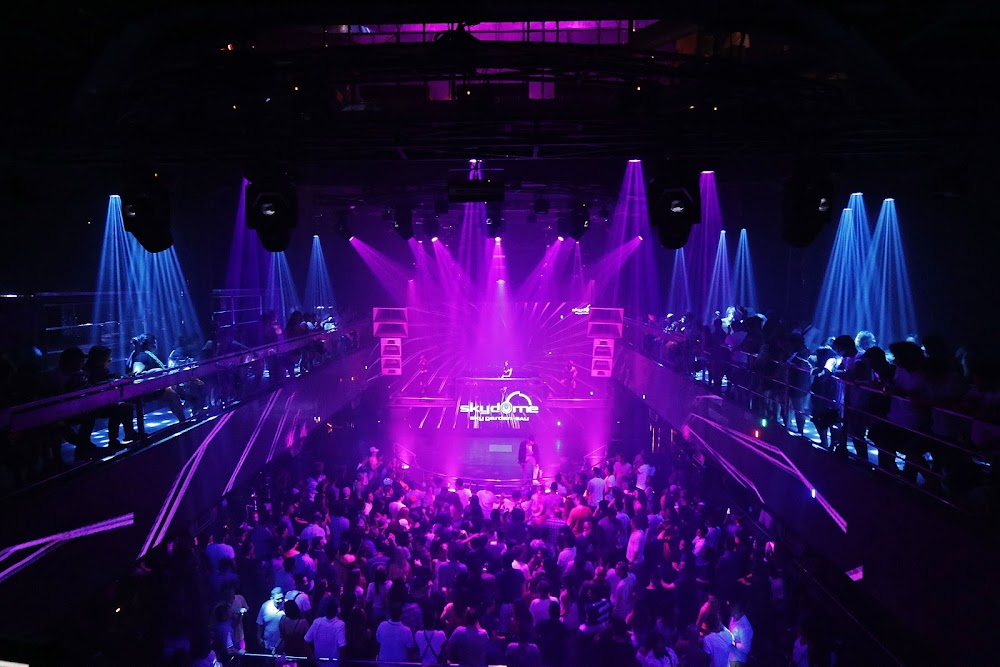
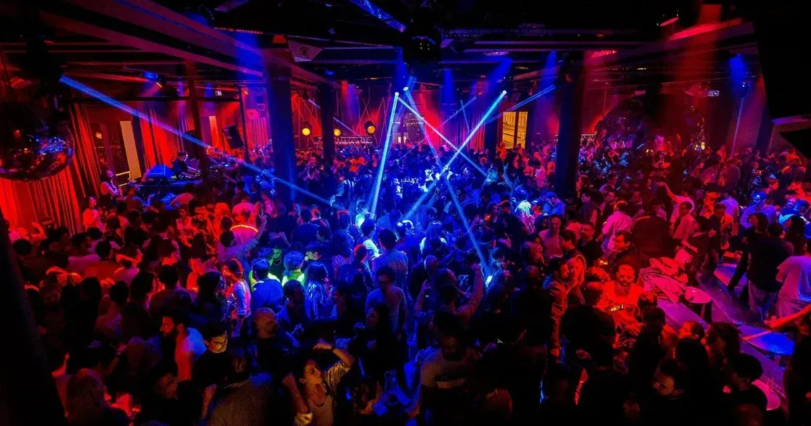
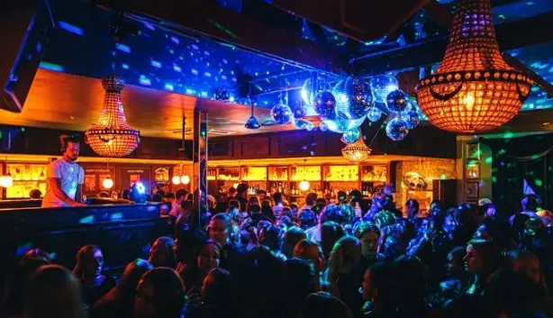
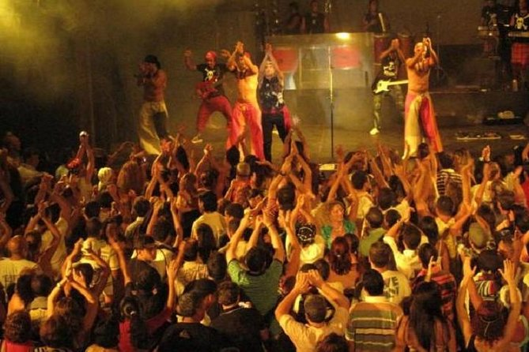
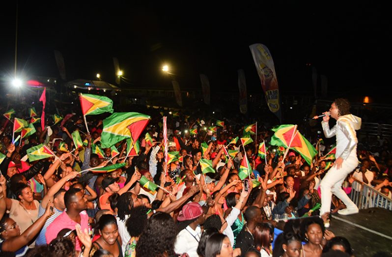

Feestvakanties
Ben jij ook een feestbeest en wilt graag op vakantie om te gaan feesten? Dan hebben wij de beste keuzes voor jou al klaar staan. Samen met de vrienden uitstappen of toch alleen, je vind het allemaal hier.
Azië
Thailand
Doe mee aan de Full Moon feesten op Koh Phangan. Er is veel drukte, mooie neon kleuren, touwtjespringen en nog veel andere activiteiten. Dit is een wereldberoemde feest wat je wel eens moet meemaken! Zo zijn er nog meer eilanden in Thailand waar je kan feesten. Als je al genoeg hebt van Koh Phangan dan kan je ook naar Koh Phi Phi.
Filipijnen
Er is een prachtig eiland in de Filipijnen genaamd Borocay. Dit is de party spot om naartoe te gaan. Er is een grote aanbod van clubs en bars! Sinds dit eiland best beroemd is kan het best druk zijn, maar door de mooie stranden is het het alsnog waard.
India
Kom naar Goa, een stad in India met prachtige stranden vol muziek. Het nachtleven draait veel om strandfeesten, dj's, lang opblijven en dansen.
Indonesië
Ontdekt het hart van feesten in Bali. Hier heb je drukke nachtclubs, bars en feesten op het strand. Dit eiland is best bekend, maar zeker waard. Op dit eiland is er ook een bekende club: Sky Garden!
Afrika
Nigeria
Nigeria is de plek voor feesten als je naar Afrika op vakantie gaat, vooral Lagos. Hier vind je straatfeesten, clubs, bars, livemuziek, noem het maar op! Vaak is het hier luid en energiek.
Zuid-Afrika
Kom naar Kaapstad voor onvergetelijke tijden. Bars, happy hours, beach clubs, you name it! Vaak zijn er ook nog zwembaden en penthouses. Het is wel belangrijk dat je niet teveel meeneemt, door de drukte kan er wel wat gestolen worden uit je zakken.
Zuid-Amerika
Brazilië
Maak uitstapjes naar de stad Rio de Janeiro. Hier vind je ontelbaar veel bars. Vergeleken met veel andere steden is Rio de Janeiro vrij relaxt. Heb je meer zin in drukte en dans, ga dan naar Fortaleza. Hier zijn er dansavonden met Braziliaanse dansvormen.
Guyana
Georgetown heeft alles wat je nodig hebt. Van winkelcentra tot bars en clubs; er is genoeg plek om te gaan feesten. Bezoek ook zeker de clubs Altitude en Palm Court.
Europa
Spanje
Heb jij je ooit afgevraagd wat de grootste discotheek is van Europa? Dan heb je geluk! In Ibiza, Spanje, vind je de grootste discoteek. Er komen vaak beroemde DJ's naar Ibiza. Als je dit niet wilt missen kom dan naar Ibiza!